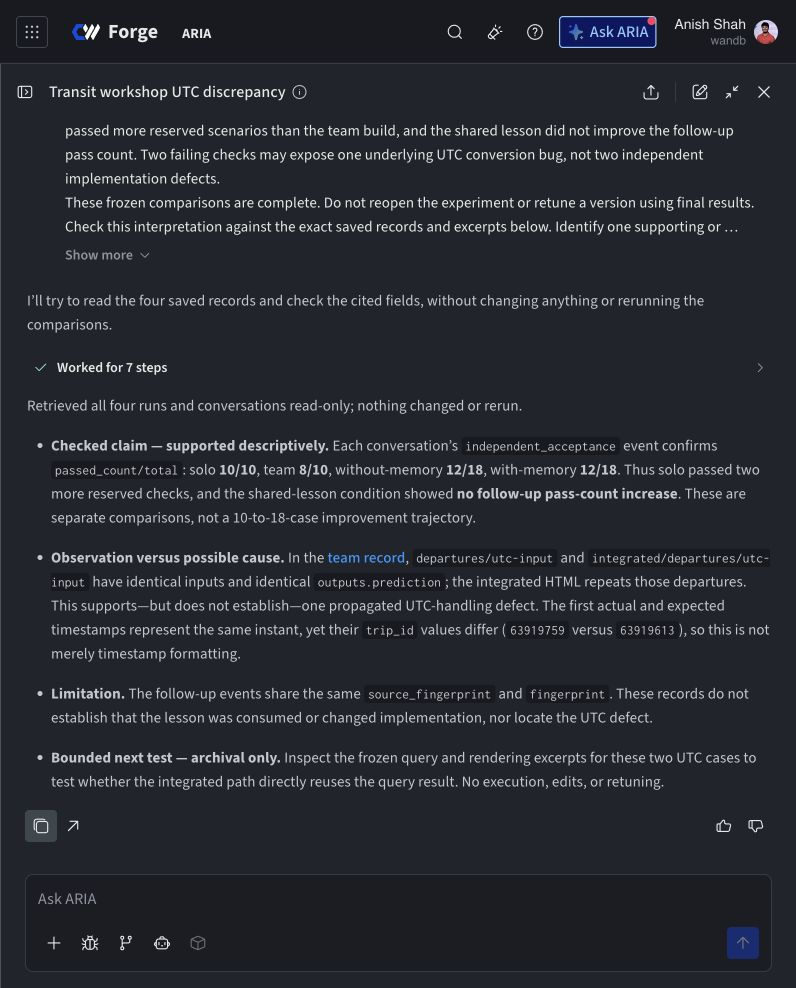
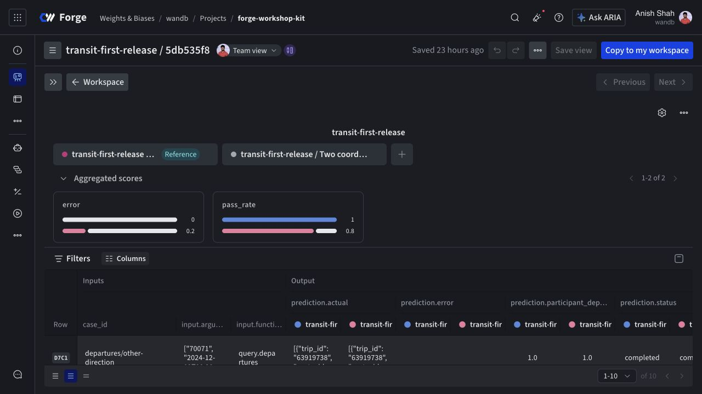

Transit Factory / Check our conclusion
Recorded instructor investigation. These are saved instructor records, not the outcome of an unexecuted participant edit.
Exact URLs and frozen acceptance excerpts; no native attachment. ARIA retrieved all four named runs and conversations read-only and confirmed independent acceptance counts. It inspected matching UTC-input cases and the follow-up fingerprints. The selected final records did not prove that a lesson was consumed. Its proposed next step is an archival code-path audit rather than an executed experiment.
Open the actual ARIA conversation · Check the supplied source values offline
Exact submitted prompt
I am preparing an instructor-recorded transit workshop investigation. My interpretation: The solo build passed more reserved scenarios than the team build, and the shared lesson did not improve the follow-up pass count. Two failing checks may expose one underlying UTC conversion bug, not two independent implementation defects.
These frozen comparisons are complete. Do not reopen the experiment or retune a version using final results.
Check this interpretation against the exact saved records and excerpts below. Identify one supporting or contradicting observation and cite the record, field, or event. Separate observations from possible causes; state missing evidence. Do not change code or settings, launch experiments, update project memory, or create automations. Analysis only.
Records: [{"stage_id":"e11ffa49b71896fb877e2a7c821fa2e1","stage_name":"factory/evaluate/solo","trace_url":"https://forge.coreweave.com/agent-lens/wandb/forge-workshop-kit/conversations/e11ffa49b71896fb877e2a7c821fa2e1","run_url":"https://forge.coreweave.com/wandb/wandb/forge-workshop-kit/runs/e11ffa49b71896fb877e2a7c821fa2e1"},{"stage_id":"a8d73a215bf11c9ae267956656f05caa","stage_name":"factory/evaluate/team","trace_url":"https://forge.coreweave.com/agent-lens/wandb/forge-workshop-kit/conversations/a8d73a215bf11c9ae267956656f05caa","run_url":"https://forge.coreweave.com/wandb/wandb/forge-workshop-kit/runs/a8d73a215bf11c9ae267956656f05caa"},{"stage_id":"6c7b7b6daeb47890999aa69754554369","stage_name":"factory/evaluate/without-memory","trace_url":"https://forge.coreweave.com/agent-lens/wandb/forge-workshop-kit/conversations/6c7b7b6daeb47890999aa69754554369","run_url":"https://forge.coreweave.com/wandb/wandb/forge-workshop-kit/runs/6c7b7b6daeb47890999aa69754554369"},{"stage_id":"c4e62c51a22d9c0528897ce5175af383","stage_name":"factory/evaluate/with-memory","trace_url":"https://forge.coreweave.com/agent-lens/wandb/forge-workshop-kit/conversations/c4e62c51a22d9c0528897ce5175af383","run_url":"https://forge.coreweave.com/wandb/wandb/forge-workshop-kit/runs/c4e62c51a22d9c0528897ce5175af383"}]
Saved evidence excerpts: {"factory/evaluate/solo":{"passed_count":10,"total":10,"scenario_pass_rate":1.0,"elapsed_seconds":0.15488866603118367},"factory/evaluate/team":{"passed_count":8,"total":10,"scenario_pass_rate":0.8,"elapsed_seconds":0.128166542010149},"factory/evaluate/without-memory":{"passed_count":12,"total":18,"scenario_pass_rate":0.6666666666666666,"elapsed_seconds":0.17118924998794682},"factory/evaluate/with-memory":{"passed_count":12,"total":18,"scenario_pass_rate":0.6666666666666666,"elapsed_seconds":0.1797366660030093},"team_failures":[{"case_id":"departures/utc-input","inputs":{"function":"query.departures","arguments":["70072","2024-12-02T23:00:00+00:00",4]},"first_actual":[{"trip_id":"63919759","route_id":"Red","headsign":"Alewife","stop_id":"70072","stop_name":"Kendall/MIT","service_date":"2024-12-02","departure_time":"2024-12-02T23:03:00+00:00"}],"first_expected":[{"trip_id":"63919613","route_id":"Red","headsign":"Alewife","stop_id":"70072","stop_name":"Kendall/MIT","service_date":"2024-12-02","departure_time":"2024-12-02T18:03:00-05:00"}]},{"case_id":"integrated/departures/utc-input","inputs":{"function":"query.departures","arguments":["70072","2024-12-02T23:00:00+00:00",4]},"first_actual":[{"trip_id":"63919759","route_id":"Red","headsign":"Alewife","stop_id":"70072","stop_name":"Kendall/MIT","service_date":"2024-12-02","departure_time":"2024-12-02T23:03:00+00:00"}],"first_expected":null}]}
Give a concise response with one checked claim, one limitation, and one bounded next test. If you cannot read a linked record, say so and base any interpretation explicitly on the supplied excerpt.
Please retrieve the named records read-only if the available tools support it. If they do not, state that limitation. Keep the response under 220 words.Actual ARIA response
Instructor citation check
supported: The solo build passed 10/10 reserved checks, the team passed 8/10, and both follow-up builds passed 12/18.
The saved factory/evaluate/solo, team, without-memory, and with-memory results contain passed_count/total values 10/10, 8/10, 12/18, and 12/18. These match the native independent_acceptance events reported by ARIA. The first native EvalTables capture shows the separate 10-case comparison only. The UTC case has different trip IDs despite timestamps representing the same instant; a propagated defect is a hypothesis, not an established root cause.
Open the checked record in Forge


- 1.0 versus 0.8 pass rate
- Ten matching cases